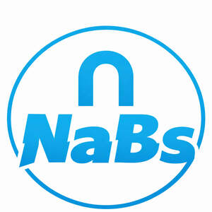

Trade Mark Journal No.2026/011 13 March 2026
UK00004347197 28 February 2026 (21)

- Class 21
- Storage jars; Storage tins; Food storage containers; Kitchen utensils; Household or kitchen utensils; Kitchen graters; Kitchen jars; Kitchen containers; Kitchen mitts; Kitchen sponges; Kitchen sieves; Kitchen utensils of silicon; Kitchen moulds; Household or kitchen containers; Spatulas for kitchen use; Graters for kitchen use; Ceramics for kitchen use; Pestles for kitchen use; Kitchen mixers, non-electric; Kitchen paper racks; Defrosting trays for kitchen use; Turners for kitchen use; Kitchen paper dispensers; Kitchen grinders, non-electric; Mortars for kitchen use; Cooking utensils; Batter dispensers for kitchen use; Funnels for kitchen use; Cooking pots for use in microwave ovens; Chopping boards for kitchen use; Cutting boards for the kitchen; Kitchen cutting boards; Bowls for floral decorations; Wall decorations of porcelain; Wall decorations of terra-cotta; Porcelain cake decorations; Brushes for grooming pet animals; Litter scoops for use with pet animals; Pet grooming glove; Litter trays for pet animals; Pet paw cleaners, non-electric; Food containers for pet animals; Animal-activated pet feeders; Pet lick mats; Pet feeding bowls; Pet feeding dishes; Electronic pet feeders; Cages for pets; Pet treat jars; Cages for household pets; Pet drinking bowls; Electric pet brushes; Automatic pet feeders; Deshedding brushes for pets; Pet feeding and drinking bowls; Deshedding combs for pets; De-shedding combs for pets; Pet feeding bowls, automatic; Household containers for storing pet food; Trays (Litter -) for pets; Litter trays for pets; Food mashers; Food basters; Containers for bird food; Plastic bottles; Plastic cups; Plastic buckets; Plastic plates; Tablemats of plastic; Planters of plastic; Plastic coasters; Cups of paper or plastic; Plastic funnels; Plastic water bottles; Window boxes; Bento boxes; Plastic juice box holders; Tissue box covers; Soap boxes; Candy boxes; Boxes of glass; Sandwich boxes; Juice box holders made of plastic; Boxes for candies; Lunch boxes; Boxes for biscuits; Bread boxes; Ceramic tissue box covers; Boxes of china; Boxes of porcelain; Enamelled boxes; Boxes for sweets; Cool boxes; Enamel boxes; Cat litter boxes; Towel racks; Spice racks; Oven to table racks; Dish drying racks; Toast racks; Mug racks; Clothes drying racks; Racks for drying clothes; Clothes racks, for drying; Drying racks for clothes; Wall-mounted drying racks for laundry; Laundry drying racks; Drying racks for laundry; Soap racks; Shampoo racks; Height adjustable ceiling-mounted drying racks for laundry; Pot lid racks; Vegetable racks; Drying racks for washing; Racks for cosmetics; Racks for airing clothes; Hand soap racks; Cooling racks for baked goods; Shower gel racks; Toilet paper racks; Racks for body cleansers; Fitted racks for hair fixers; Clothes drying hangers; Vegetable brushes with peelers; Zesters; Vegetable tongs; Graters; Vegetable mashers; Roller tubes for peeling garlic; Rotary cheese graters; Asparagus tongs; Cooking graters; Salad tongs; Citrus squeezers; Lemon squeezers; Tea bag rests; Piping bags ; Pastry bags; Isothermic bags; Bota bags; Cookware; Aluminium cookware; Tableware, cookware and containers; Cookware for use in microwave ovens; Bakeware; Aluminium bakeware; Non-electric cooking pots and pans; Cooking pans; Skillets; Ovenware; Non-electric cooking pans; Cooking utensils, non-electric; Oven-to-table tableware; Baking utensils; Saucepans; Earthenware saucepans; Grills in the nature of cooking utensils; Ceramic tableware; Pressure cooking saucepans, non-electric; Non-electric pressure cooking saucepans; Cooking pots; Tableware; Household utensils; Non-electric frying pans; Scourers for saucepans; Dishware; Tableware, other than knives, forks and spoons; Portable pots and pans for camping; Dinnerware; Cooking utensils for barbecue use; Disposable paperboard bakeware; Cooking utensils for use with domestic barbecues; Kitchen utensils, not of precious metal; Couscous cooking pots, non-electric; Dishes for microwave ovens; Roaster pans; Metal pans; Cooking strainers; Frying pans; Dinnerware of porcelain; Stir-fry pans; Tableware of porcelain; Jewelry dishes; Non-electric rice cooking pots; Shallow pans for cooking; Brushes; Brush holders; Shaving brush holders; Scrubbing brushes; Shaving brush stands; Dusting brushes; Eyeliner brushes; Toilet brush sets; Mascara brushes; Basting brushes; Brush goods; Mopping brushes; Nail brushes; Hair brushes; Tongue brushes; Hair for brushes; Tooth brush cases; Tongue cleaning brushes; Lint brushes; Interdental brushes; Pastry brushes; Shaving brushes; Brushes for cleaning; Cleaning brushes; Tooth brushes; Horsehair for brushes; Toothbrush bristles; Eyelash brushes; Lip brushes; Crumb brushes; Shampoo brushes; Mane brushes; Washing brushes; Scraping brushes; Mushroom brushes; Toilet brush holders; Exfoliating brushes; Eyebrow brushes; Interdental brushes for cleaning the teeth; Lawn brushes; Bottle brushes; Make-up brushes; Bottle cleaning brushes; Toilet brushes; Shaving brushes of badger hair; Pot cleaning brushes; Washing-up brushes; Fireplace brushes; Dish brushes; Lavatory brush stands; Bathtub brushes; Tub brushes; Carpet-cleaning brushes; Tooth brushes, non-electric; Electric tooth brushes; Brushes, except paintbrushes; Hair color application brushes; Bath brushes; Cake brushes; Dishwashing brushes; Skin cleansing brushes; Brush making materials; Brushes for washing up; Hair tinting brushes; Handles for brushes; Denture brushes; Lavatory brushes; Horse brushes; Brushes for basting meat; Holders for shaving brushes; Cattle hair for brushes; Electric rotating hair brushes; Stands for shaving brushes; Floor brushes; Window groove cleaning brushes; Lamp-glass brushes; Boot brushes; Stands for tooth brushes; Shoe brushes; Water closet brush holders; Brushes for use on tree bark; Cosmetics brushes; Blacking brushes; Raccoon dog hair for brushes; Horse brushes of wire; Feeding bottle brushes; Cosmetic brushes; Ski wax brushes; Cleaning brushes for teapot spouts; Brushes for household use; File brushes; Holders for brushes; Clothes brushes; Ship-scrubbing brushes; Golf brushes; Brushes for cleaning cars; Automobile wheel cleaning brushes; Brushes for grooming horses; Brushes for pipes; Brushes for cleaning footwear; Brushes for pets; Cleaning brushes for feeding bottles; Cups; Cups and mugs; Coffee cups; Tea cups; Sippy cups; Compostable cups; Glass cups; Drinking cups; Cardboard cups; Liqueur cups; Egg cups; Biodegradable cups; Paper cups; Cup lids; Mixing cups; Sake cups; Feeding cups; Demitasse sets comprised of cups and saucers; Silicone baking cups; Paper baking cups; Baking cups of paper; Cupcake baking cups; Cups made of china; Cups made of earthenware; Training cups for babies; Cups made of pottery; Cup holders; Training cups for infants; Cups made of plastics; Feeding cups for children; Cups of precious metal; Double wall cups; Egg cups of precious metal; Coffee mugs; Insulating sleeve holder for beverage cups; Mugs; Cups, not of precious metal; Suction bowls; Coffee pots; Coffee scoops; Glass mugs; Compostable bowls; Porcelain mugs; Mugs of porcelain; Tea pots; Tea strainers; Carafes; Sugar bowls; Glass bowls; China mugs; Mugs of china; Beer mugs; Coffee stirrers; Bowls; Pint glasses; Mugs made of plastic; Milk jugs.
NABSIOX LTD